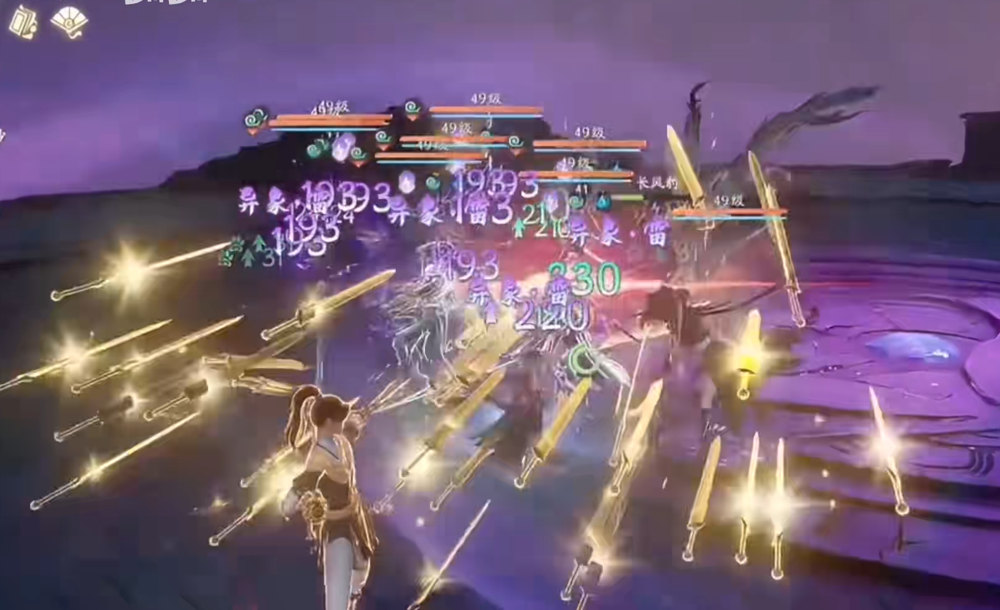

Interned in CMGE in summer 2024. Designed a toughness system to handle hit reactions and attack priorities for "Sword and Fairy: Far Beyond Time", an ARPG with more than 1m subscriptions.
Previously, the hit reactions in the game were triggered by fixed logic. As development progressed, there was an additional need to display different types of effects by the hit animations, necessitating a conditional assessment to determine which type of hit animation to play.
To solve this problem, I designed a dual-thread resilience display system, assigning values to each attack action and character hit resilience. When an attack is placed, the engine plays the corresponding hit reaction calculated from two values. This system boasts strong standardization and scalability, significantly simplifying processes and optimizing performance.
View the Game